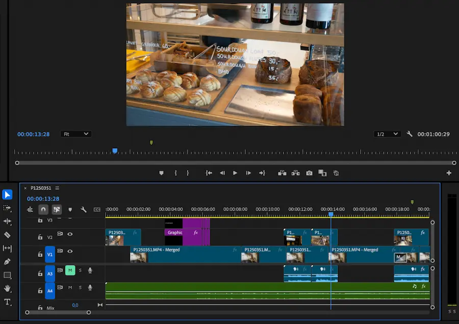
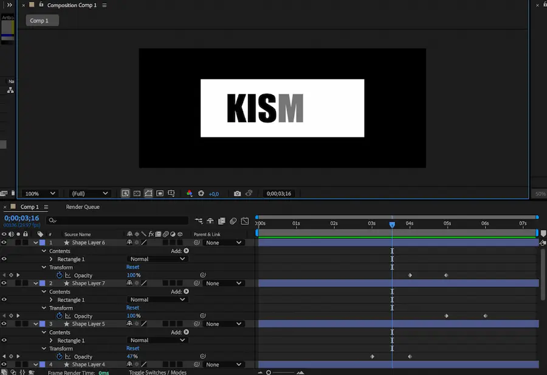
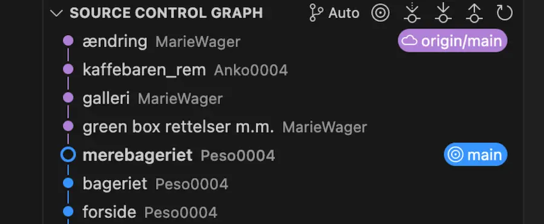
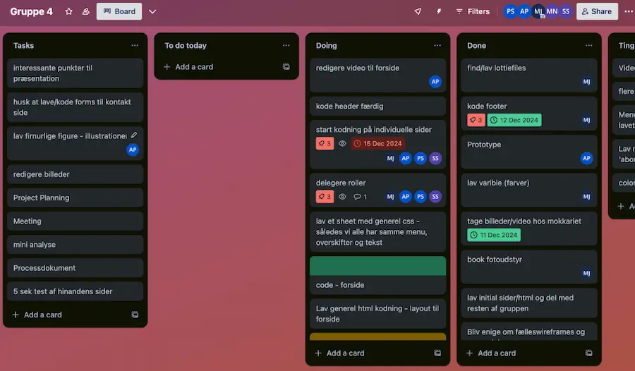

Grundlæggende indhold
I tema 5 skulle vi arbejde med indholdsproduktion. Jeg blev i dette forløb introduceret for Premiere Pro, Audition, After Effects og LottieFiles. Med denne nye læring og det, jeg tog med mig fra de tidligere temaer, skulle jeg, sammen med de grupper, jeg var i, lave et passionssite og et virksomhedssite. Passionssitet skulle være en hjemmeside om en person, der havde en passion for et givent område, og vi skulle ud og interviewe denne person. Virksomhedssitet var et redesign af en allerede eksisterende hjemmeside.
Premiere Pro
En af de ting, jeg lærte at bruge i tema 5, var Premiere Pro. Til vores passionssite var mit gruppemedlem og jeg ude og optage et interview med Peter, som er medstifter af kaffebaren Kismet. Hertil lånte vi et kamera med stativ og en ekstern mikrofon, som jeg også lærte at håndtere. Udover selve interviewet optog vi også B-rolls, som jeg senere i Premiere Pro klippede sammen med underlægningsmusik. I Premiere Pro kunne jeg også synkronisere lyden fra den eksterne mikrofon med de optagelser, vi havde taget. Herunder ses mit arbejde i Premiere Pro.
Adobe After Effects
På vores passionssite skulle vi også have en LottieFile. Jeg arbejdede her igen med bæredygtigt webdesign, da LottieFiles f.eks. fylder mindre end videoer og derfor udleder mindre CO2. Til at lave min LottieFile fik jeg færdigheder indenfor Adobe After Effects, hvor jeg lavede shape layers og keyframes. Herunder er et billede af mit arbejde med min LottieFile.
GitHub
Til at lave vores virksomhedssite skulle jeg, sammen med min gruppe, lære at arbejde i GitHub. En af vores gruppemedlemmer skulle publicere en mappe i VS Code til sit GitHub-repository, hvorefter de andre kunne indsætte URL’en fra gruppemedlemmets GitHub, og vi kunne derefter arbejde i samme kode. På billedet ses den proces, hvor vi har pullet og pushet commits i skabelsen af vores site.
Projektstyring
I vores arbejde med at redesigne kaffebaren Mokkariets hjemmeside, skulle vi også lære om projektstyring. Vi arbejdede med Scrum og afholdte hver dag scrum-møder, hvor vi talte om, hvad vi havde lavet dagen før, og hvad planen var fremadrettet. I forlængelse af dette havde vi også et Trello-board, hvor vi lavede en to-do liste, samt skrev igangværende opgaver og færdige opgaver ind, som f.eks. at lave teamkontrakt og sitemap.
